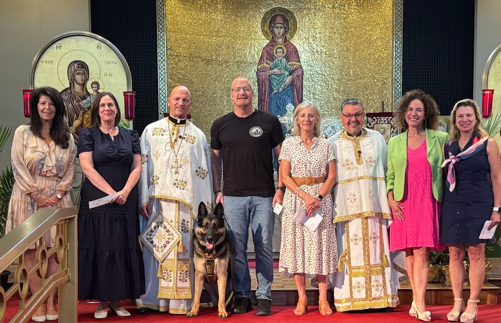

Everything we have is a gift from God — our time, our talents, and our resources. Stewardship is simply how we offer a portion of that back, so our parish family can keep worshiping, growing, and welcoming others home.
DonateOpens our secure giving portal (Realm) in a new tab.
"Each of you should give what you have decided in your heart to give, not reluctantly or under compulsion, for God loves a cheerful giver."
2 Corinthians 9:7Teaching Church School, greeting visitors, helping at the Festival, or singing in the choir — your presence is a gift in itself.
Volunteer my timeWhatever you're good at — hospitality, teaching, tech, hands-on repairs — there's a place for it here.
Share my talentThere's no set amount and no obligation — just a prayerful gift of whatever you're able to offer, given freely.
Give NowThis year, stewardship supports a $750,000 plan (placeholder — to be confirmed by Parish Council) for our parish, made up of a few key priorities.
Finishing the repair project that protects our worship space for generations to come.
Supporting Fr. Rick and the pastoral ministry that walks with our families through every season of life.
Materials, space, and support for the teachers and volunteers forming the next generation of our parish.
Caring for parishioners and neighbors in need, throughout Glenview and beyond.
New sound and screens are in place in the parish hall, funded entirely through stewardship and a memorial gift.
Over 180 families have made a stewardship commitment this year. If you haven't yet, we'd love for you to join them.
Thanks to your continued stewardship, we've reached 70% of our goal for the sanctuary roof repair project.

No. Stewardship isn't dues, and no one is turned away from the sacraments or parish life based on giving. It's an offering made freely, out of gratitude — not a transaction.
There's no set amount. The traditional model is a tithe of 10%, though many of our stewards give closer to 3% of their gross household income. We encourage you to give prayerfully, in a way that feels meaningful to you — your gift should reflect your own circumstances, not a fixed formula.
As a general guide, here's what proportional giving can look like at a few income levels:
| Annual Income | 4% | 6% | 8% | 10% |
|---|---|---|---|---|
| $500,000 | $20,000 | $30,000 | $40,000 | $50,000 |
| $300,000 | $12,000 | $18,000 | $24,000 | $30,000 |
| $200,000 | $8,000 | $12,000 | $16,000 | $20,000 |
| $150,000 | $6,000 | $9,000 | $12,000 | $15,000 |
| $100,000 | $4,000 | $6,000 | $8,000 | $10,000 |
| $50,000 | $2,000 | $3,000 | $4,000 | $5,000 |
Of course. Your commitment isn't a contract — it's a promise you can revisit anytime your circumstances change. Just reach out to the parish office to update it.
That's completely okay. Time and talent are just as valuable a form of stewardship — see the section above for ways to get involved without giving financially.
Yes, Saints Peter & Paul is a registered 501(c)(3) organization. You'll receive a giving statement for tax purposes each year.
Absolutely — call the parish office at (847) 729-2235, or reach out through our contact page. We're always glad to talk it through.
Yes. Beyond cash, check, or card, some stewards choose to give through:
These options can have real tax implications, so we recommend speaking with your financial or tax advisor. For any of them, the parish office is happy to help — call (847) 729-2235.
Your generosity, in whatever form it takes, is what keeps Saints Peter & Paul alive, welcoming, and growing for the generations who come after us.